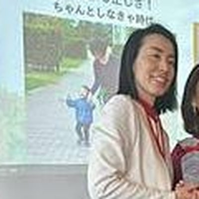
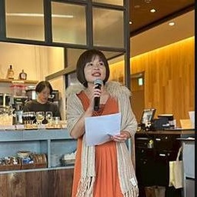
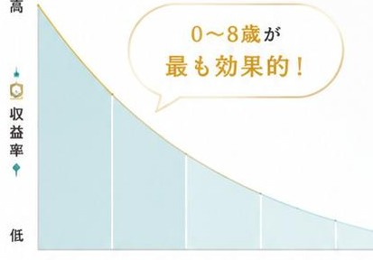
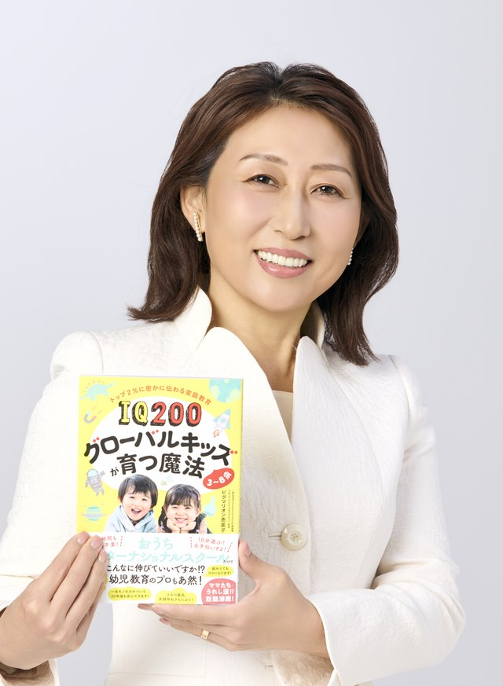

さらに！【セミナー参加者限定】
特典01
見逃した部分をもう一度見たいという声にお応えして、セミナー終了後2日間だけアーカイブ動画を公開。パートナーと一緒に見直すこともできます。
特典02
セミナーで使用するスライドをそのままPDFでプレゼント。「脳のOSアップデート」「ママは太陽」など、重要な概念をいつでも振り返れます。
特典03
お子さんの「8つの力」のバランスを自分でチェックできるシート。今、何が伸びていて、何を伸ばすチャンスがあるのかが一目で分かります。
特典04
「早くしなさい」「なんでできないの？」を、子どもの脳が動き出す声かけに変換する実践シート。明日からすぐに使えます。
これらの特典で、学びをすぐに実践し、お子さんの未来を大きく変えていきましょう！
| 日程 | 時間 | 残席 |
|---|---|---|
| ○月○日(○) | 10:00~11:30 | 残席3 |
| ○月○日(○) | 14:00~15:30 | 残席2 |
| ○月○日(○) | 20:00~21:30 | 残席4 |
※日程は最新のものに差し替えてください
このページ限定で無料参加いただけます!
閉じてしまうと有料となりますのでご注意ください。本セミナーは、通常の幼児教室や英語教室では絶対に教えてもらえない「脳の土台の作り方」を90分で公開しています。
スクール受講生の90%以上が子育ての変化を実感!
お子さんの可能性を最大限に引き出しながら、イライラせずに穏やかに子育てができる——そんな毎日が手に入ったら、どうでしょうか？
実は、こんなお悩みを抱えるママがたくさんいます
しかし、そこから
1年のサポート期間中に「勉強しなさい」と言わない子育てに変身できたのです！
「本当にそんなことができるの？」「うちは普通の家庭だし…」——そう思った方は、まずは受講生の声をご覧ください。

ちよさん｜2児のママ
ケース：子ども二人、コロナ禍の子育てで「私がちゃんとしなきゃ」と気負っていた。
サイン：子どもが描いたママの絵は「鬼」。眉間にはいつも皺。厳格・完璧主義で、子どもと心が繋がっていなかった。
介入：自分を大事にすることを教えてもらい、感情の言語化を学んだ。
結果：「主人は元々穏やかだったのに、私と同じようにキツく言うようになっていたんです。私が変わったら、主人も変わりました。」

ひろこさん｜3兄弟のママ・看護師
ケース：3兄弟。夫は単身赴任でワンオペ。看護師で激務。「時間がない」「子どもに何もしてあげられていない」と悩む日々。
背景：夫や両親の助けは借りられず、仕事の責任もあった。
介入：講座のワークで「ある」に目を向けることができた。
結果：グレー色の世界だったのがバラ色に。子育てが楽しく豊かになり認定講師に。夫が自分から子育てに関わるように。
のりこさん｜小1の娘・フルタイムワーキングマザー
状態：娘さん（小1）は引っ込み思案で、言いたい事も言えず、心配が尽きなかった。
背景：ママ自身もNOと言えなかった。人間関係で辛いこともあった。
介入：境界線と伝え方を練習。
結果：娘さんが自発的に発言するように。この日もたくさんの友達をつくっていた。「自然と親子共に意見を言えるようになりました。」
よしこさん｜一人っ子のママ→認定講師
ケース：一人っ子。全国展開している有名幼児教室に通わせても違和感が拭えず、迷子状態に。
背景：「子どもが自分の望む人生を歩んでいける子になるには？」という不安。
介入：講座を実践するなかで自分の軸ができた。
結果：幼児教室を全部やめた。確実に幸せな人生が送れると確信。多くの人に知ってもらいたいと認定講師の道に。
受講生パパの声より
「家の空気がこんなに変わるとは思いませんでした」── 妻が前を向き、子どもが自信をつけ、家族みんなが笑って過ごせるように。
他にも、こんな変化が続々と。
「塾にも行かず、母親講座の教材だけで、上の子は小学3年生で英検3級を取得できました。英語嫌いだったのが嘘のようです。」
「電車にしか興味がなかった子が、虫に興味を持って図鑑を買い、幼虫を育て…と興味の幅がぐんと広がりました。生活の質までガラリと変わりました。」
「『ママこれ何？』に流されていた私が、同じ場面で『子どもを伸ばすチャンスだ！』と思えるように。毎日が楽しいです。」
多くのママが、笑顔で子育てを楽しめるようになっています。
子育てで成功するのに、特別な学歴も、英語力も、教育の専門知識も必要ありません!
Why? なんで言い切れるの?
分かっているのに動けない「3つの壁」
壁①
正解が多すぎる
壁②
一人で続けられない
壁③
うちの子に合うか分からない
この3つで「分かっているのに動けない」を超えていきます。
子どもは「教わる」のではなく「真似る」生き物。ママの関わり方を変えるだけで、子どもは勝手に変わっていきます。
教材には2000以上の英語センテンスがネイティブ音声付きで入っています。ママはそれを一緒に聞いて、リピートするだけ。
テストの点数より大切な「8つの力」
テストの点数は"結果"、8つの力は"原因"。土台を作れば、勝手に伸びる。
01
思考力
"なぜ？"を考える力
02
運動能力
脳と体をつなぐ力
03
コミュニケーション能力
伝える・聴く力
04
自立・自己制御
やるべきことをやれる力
05
探究心
知りたい！の原動力
06
巧緻性
手先を器用に使う力
07
コンピテンス
"僕はできる"という自信
08
英語力
世界とつながる力
ママの「脳のOS」をアップデートする
どんなに良い教材を入れても、OSが古いと処理落ちする。教材の前に、ママのOSを変える。
ママのOSが変われば、同じ教材でも効果が全然違う。
オンラインセミナーで全て公開!
お子さんの生涯を左右する"脳の土台"は、今しかつくれません。
ノーベル経済学賞を受賞したジェームズ・ヘックマン博士のデータによると、教育投資の収益率は0〜8歳が最も高く、年齢が上がるほど同じお金をかけても得られるリターンは下がっていきます。

出典：Heckman, J. (2006)
スキャモン発育曲線によると、神経系は8歳頃までに約90%が完成し、脳の重量は3歳で成人の約9割に到達します。小学校に入ってからでは、土台を作る最適な時期は過ぎているのです。
「もう少し考えてから」「来年でもいいかな」——そう思った瞬間に、取り返しのつかない時間が過ぎていきます。塾に入れるのは小学5年生からでも間に合いますが、脳の土台は0〜8歳で決まります。
土台ができている子とできていない子では、同じ塾に通っても吸収率がまるで違う。だからこそ、今なんです。
どうして、このメソッドで育った子どもは自分から机に向かうようになるのか？その理由をオンラインセミナーで全て公開します。
高額な英語教材を買わなくても「英語耳」が育つ理由
「早くしなさい」と言わずに子どもが動き出す魔法の声かけ
SNSやYouTubeを頑張らなくても子どもの興味が広がる方法
義務教育レベルの英語力でも「おうち英語」ができる秘密
塾に通わせなくても自分で学ぶ子になる「脳のOSアップデート」
実績や経験がなくても子育てに自信が持てるようになる理由
ワンオペ育児でもパートナーを巻き込める具体的な方法
都会でも地方でも同じように子どもの可能性を伸ばせる方法
「やりなさい」と言わなくても自分から挑戦する子に育つ秘密
これらの秘密を余すことなくお伝えします！
当講座で全て解決されます!
1日10分の関わり方を変えるだけでお子さんの脳のOSをアップデートする方法をお伝えしています。特別な道具も、まとまった時間も不要です。
他のスクールだと、学んだ内容を実践するのは卒業後。しかし、受講したその日から実践できる具体的な声かけや関わり方が学べるのは当講座だけです!
グローバルキッズ診断でお子さんの8つの力を数値で可視化。数字が見えると、次にやるべきことが迷わなくなります。

詳細はオンラインセミナーでご案内します!
こういった方はご参加をお断りする場合があります
| 日程 | 時間 | 残席 |
|---|---|---|
| ○月○日(○) | 10:00~11:30 | 残席3 |
| ○月○日(○) | 14:00~15:30 | 残席2 |
| ○月○日(○) | 20:00~21:30 | 残席4 |
最後に、お伝えさせてください!
受講後の変化
今のあなた
毎晩スマホで検索、何が正解か分からない
1週間後
声のかけ方が変わる
3ヶ月後
子どもの目が輝く
12ヶ月後
自分から動く子に
この講座で
「自分で考えて動く子」が育てば
あなた自身の人生も変わる可能性が高い
ということ。
受講生の90%以上が
子育ての変化を実感しています。
少しでも「勉強しなさい」と言わない子育てに興味があるなら、
まずはオンラインセミナーにお越しください。
各日程とも次々とお席が埋まっています。目の前のチャンスを逃さないようご注意ください。

IQ・EQ200式 ホームインターメソッド主宰
一般社団法人 Global Kids' Mom 代表理事
ピグマリオン恵美子
東京・吉祥寺にて16年間、英語スクールを経営。「入会待ち」が続く教室運営の傍ら、のべ1万人以上の親子への指導実績を持つ「現場の教育家」です。
私自身も3児の母として試行錯誤してたどり着いたのが、「頑張りすぎずに、子どもの才能を最大化する」このメソッド。
その実績は大手出版社・三笠書房様より書籍化され、多くの教育感度の高いママたちに選ばれています。TEDx登壇実績あり。
「勉強しなさい」と言わなくても自分から動く子を育てる「太陽ママ」の育成に力を入れ、全国で認定講師の養成も行っている。
228
IQ 228
統計的な「天才」領域
詰め込み教育なし
Finalist
算数オリンピック
自ら目標を立ててファイナリストへ
8
非認知能力 可視化
8つの力をバランスよく
TEDx開催実績
TEDx主催・登壇実績あり
コミュニティ活動
全国の認定講師・
受講ママ コミュニティ
このページ限定で無料参加いただけます!
閉じてしまうと有料となりますのでご注意ください。
| 日程 | 時間 | 残席 |
|---|---|---|
| ○月○日(○) | 10:00~11:30 | 残席3 |
| ○月○日(○) | 14:00~15:30 | 残席2 |
| ○月○日(○) | 20:00~21:30 | 残席4 |
子どもの一番若い日は、今日。
脳の黄金期を逃さないでください。